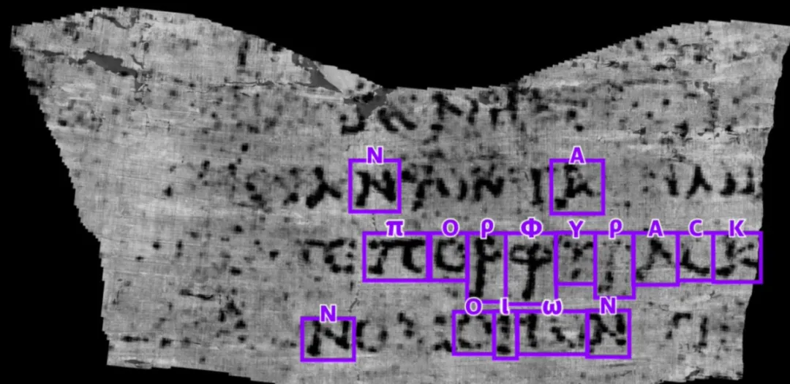

引言
原文：https://mp.weixin.qq.com/s/0RWIjzcB7dWhxrokWBJkdA
大模型将成为通用人工智能的重要途径。在这个由0和1编织的数字时代，人工智能的腾飞已不是科技梦想，而是日益切实的现实。其中，大模型作为人工智能的核心力量，正以前所未有的方式重塑着我们的生活、学习和工作。无论是智能语音助手、自动驾驶汽车，还是医疗诊断系统，大模型都是幕后英雄，让这些看似不可思议的事情变为可能。
人工智能的发展历史
*1. 1950s-1970s：AI的诞生和早期发展*
◦1950年，图灵测试的提出，为机器智能提供了一个评估标准。
◦1956年，达特茅斯会议标志着人工智能作为一门学科的正式诞生。
◦1960年代，早期的AI研究集中在逻辑推理和问题解决上。
2. 1980s：专家系统的兴起
◦专家系统的成功应用，如MYCIN在医学诊断领域的应用。
◦机器学习算法开始发展，如决策树和早期的神经网络。
3. 1990s：机器学习的进展
◦反向传播算法的提出，极大地推动了神经网络的研究。
◦1997年，IBM的深蓝击败国际象棋世界冠军，展示了AI在策略游戏中的能力。
4. 2000s：大数据和计算能力的提升
◦互联网的普及带来了海量数据，为机器学习提供了丰富的训练素材。
◦计算能力的提升，尤其是GPU的广泛应用，加速了深度学习的发展。
5. 2010s：深度学习革命
◦2012年，AlexNet在ImageNet竞赛中的胜利，标志着深度学习在图像识别领域的突破。
◦深度学习在语音识别、自然语言处理等领域取得显著进展。
图片来源 https://blog.csdn.net/Ares_song/article/details/106880658
6. 2017年：Transformer和自注意力机制
◦2017年，Transformer模型的提出，引入了自注意力机制，极大地提升了模型的性能。
◦Transformer模型在自然语言处理任务中取得了革命性的成果，如BERT、GPT等模型。
7. 2020s：大模型和多模态学习
◦大模型如chatGPT、Claude、Gemini、Llama、chatglm、Kimi等等都展示了强大的能力。
◦多模态学习的发展，如CLIP模型，能够理解和生成跨模态内容。
大模型的本质
大模型是能够从海量数据中学习、利用这些数据进行推理，并使用这些推理来回答用户的问题或是执行特定的任务。大模型（如ChatGPT、LLM等）在人工智能领域中被广泛应用，其核心理念和工作原理可以总结为以下几个方面：
1. LLM的组成 - 两个文件
大模型由以下两个关键部分构成：一个是 参数集，另一个是 执行代码。
•**参数集：**这是模型的"大脑"，包含了通过训练学习到的神经网络权重。
•**执行代码：**这是模型的"引擎"，包含用于运行参数集的软件代码，可以采用任何编程语言实现。
训练大模型需要对大量互联网数据进行有损压缩，是一项计算量更大的任务，通常需要一个巨大的GPU集群。
有趣的是，你只需要一台标准的计算机就可以运行像Llama-3这样的LLM并得出推论。在本地服务器上运行，因此，甚至不需要互联网连接。
2. LLM的神经网络究竟在“想”什么 - 预测下一个单词
大模型的核心功能之一是预测文本序列中的下一个单词：
•输入一个“部分”句子，如“cat sat on a”。
•利用分布在网络中的参数及其连接关系预测下一个最可能的单词，并给出概率。如“mat（97%）”
•模拟了人类语言生成的方式，使得模型能够生成连贯和符合语境的句子，如生成完整的句子“cat sat on a mat”
模型根据它所获得的大量训练数据，生成“合理的延续”，即生成符合人类语言习惯的文本。
注：Transformer架构为这个神经网络提供了动力。
图片来源 A Busy Person’s Introduction to Large Language Models（https://www.openculture.com/2023/12/a-busy-persons-introduction-to-large-language-models-llms.html)
3. 神经网络“真正”的工作方式仍然是个谜
尽管我们可以将数十亿个参数输入到网络中，并通过反复微调训练这些参数，从而获得更好的预测效果，但我们并不完全理解这些参数在网络中是如何准确协作的，以及为什么它们能够生成如此准确的回答。科学上，这种现象被称为涌现。
我们知道，这些参数构建并维护了某种形式的知识数据库。然而，这种数据库有时表现得既奇怪又不完美。例如，一个大型语言模型（LLM）可能会正确回答“谁是小明的母亲？”这个问题，但如果你问它“X的儿子是谁？”，它可能会回答“我不知道”。这种现象通常被称为递归诅咒。
4. 训练大模型的步骤
预训练，训练需要对大量互联网数据进行有损压缩，输出参数文件
•收集大量互联网文本数据。
•准备强大的计算资源，如GPU集群。
•执行训练，生成基本模型。
微调阶段：
•准备高质量的训练数据，如问答对。
•在这些数据上调整模型参数，优化性能。
•进行评估和部署，确保模型达到预期效果。

图片来源 A Busy Person’s Introduction to Large Language Models（https://www.openculture.com/2023/12/a-busy-persons-introduction-to-large-language-models-llms.html）
微调阶段 - 比较
对于每个问题，人工标注者都会比较辅助模型的多个答案，并标注出最佳答案。这一步骤称为从人类反馈中强化学习（RLHF）。
5. 模型性能提升
1）模型越大，能力越强：
◦**参数量：**模型的规模通常与其参数量成正比。参数是模型学习到的知识的载体，参数越多，模型能够捕捉的信息和模式就越丰富，从而能够处理更复杂的任务。
◦**学习能力：**大模型通常拥有更强的学习能力。它们能够从大量数据中学习到更深层次的特征和规律，这使得它们在诸如自然语言处理、图像识别等任务上表现更佳。
◦**泛化能力：**大模型往往有更好的泛化能力，即在面对未见过的数据时，也能做出准确的预测和判断。
2）工具越多，能力越强：
◦**功能扩展：**为AI模型提供各种工具，可以使其功能得到显著扩展。例如，集成搜索引擎可以让模型访问互联网信息，增强其回答问题的能力。
◦**多任务处理：**工具的集成使得AI模型能够同时处理多种任务。例如，集成计算器功能可以让模型执行数学计算，集成编程接口则可以让模型编写代码。
◦**灵活性和适应性：**拥有多种工具的AI模型更加灵活和适应性强，能够根据任务需求快速调整其行为和策略。类似于人类通过使用工具解决各种任务。
面临的问题
幻觉
幻觉问题指的是大模型在生成文本时可能会产生与现实世界事实不一致的内容。这种现象可以分为几种类型:
**1. 事实性幻觉（Factuality Hallucination）：**模型生成的内容与可验证的现实世界事实不一致。大模型可能生成听起来合理但实际上错误的信息，例如，生成一篇关于一个不存在的历史事件的文章，模型可能生成一篇关于“拿破仑在月球上宣布法国胜利”的文章，尽管这在现实中从未发生过。
**2. 忠实性幻觉（Faithfulness Hallucination）：**模型生成的内容与用户的指令或上下文不一致。例如在一个关于健康饮食的讨论中，模型可能突然开始讨论健身运动，尽管这与用户的问题不直接相关。
产生幻觉的原因可能包括：
•使用的数据集存在错误信息或偏见。
•模型过度依赖训练数据中的模式，可能导致错误的关联。
•预训练阶段的架构缺陷，如基于前一个token预测下一个token的方式可能阻碍模型捕获复杂的上下文关系。
•对齐阶段的能力错位，即模型的内在能力与标注数据中描述的功能之间可能存在错位。
为了缓解幻觉问题，研究者们提出了多种方法，如改进预训练策略、数据清理以消除偏见、知识编辑、检索增强生成（RAG）等。
安全性问题
安全性问题涉及大模型可能遭受的恶意攻击和滥用，以及它们对用户隐私和数据安全的潜在威胁:
1. 对抗样本攻击：攻击者可能构造特殊的输入样本，导致模型做出错误的预测。
2. 后门攻击：在模型中植入后门，使得在特定触发条件下模型表现出异常行为。
3. 成员推断攻击：攻击者尝试推断出训练集中是否包含特定的数据点。
4. 模型窃取：通过查询模型来复制其功能，侵犯模型版权。
5. 数据隐私泄露：模型可能泄露训练数据中的敏感信息。
为了提高大模型的安全性，业界和研究界正在探索多种安全防护策略，包括：
•加强数据的采集和清洗过程，确保数据质量和安全性。
•对模型进行加固，提高其抗攻击能力。
•采用加密存储和差分隐私技术来保护数据隐私。
•增强模型的可解释性，以便更好地理解和控制模型行为。
相关技术
Prompt Engineering (提示词工程)
是什么
提示词(prompt)是人与大模型交互的重要媒介。因此，对提示词的掌握、使用、研究，便具有非常重大的意义。从人机交互出发，将大模型视为一种特殊的、很强大的计算设备，那么，提示词之于我们：“prompt是一种新型的自然用户界面”。
大多数的prompt具有以下的形式：由「指令」(instruction)和「内容」(content)两部分构成。其中，指令部分为我们需要大模型做的事，如“判断下列句子的情感”，而内容则为真正的句子，如“我今天很高兴”。注意，并不是所有的prompt都必须是这样的形式，如比较简短的prompt：“中国的首都在哪里”、“模仿百年孤独的开头写一段话”等这种言简意赅的prompt就只有指令、内容为空。
Prompt的不同分类
Prompt千变万化、不可名状，其主要由以下几种常见形式构成：
•**Zero-shot prompt:**零样本的prompt。此为最常见的使用形式。之所以叫zero-shot，是因为我们直接用大模型做任务而不给其参考示例。这也被视为评测大模型能力的重要场景之一。
•**Few-shot prompt:**与zero-shot相对，在与大模型交互时，在prompt中给出少量示例。
•**Role prompt:**与大模型玩“角色扮演”游戏。让大模想象自己是某方面专家、因而获得更好的任务效果。
•**Instruction prompt:**指令形式的prompt。
•**Chain-of-thought prompt:**常见于推理任务中，通过让大模型“Let’s think step by step”来逐步解决较难的推理问题。
•**Multimodal prompt:**多模态prompt。顾名思义，输入不再是单一模态的prompt，而是包含了众多模态的信息。如同时输入文本和图像与多模态大模型进行交互，现在的4o就能做到。
Prompt技巧（后续章节详解）
Prompt或许并不是人类与大模型进行交互的唯一和最好的方式，但一定是当下使用最多的方式。
RAG（Retrieval-Augmented Generation）
什么是RAG
RAG（Retrieval-Augmented Generation）技术是一种结合检索和生成的方法，用于提升大语言模型（LLM）在知识密集型任务中的性能。通过一个两阶段的过程提升LLMs的输出质量：
•检索（Retrieval）阶段，可以从各种数据源检索相关信息；
•生成（Generation）阶段，将检索到的文档与原始查询，形成提示模板，一起输入到生成模型中，产生最终的回答。
这种方法使模型拥有了利用实时和外部的知识库（非训练时使用的数据）的能力，提高了其在特定问题处理上的灵活性和准确性。
图片来源 RAG流程图
RAG解决什么问题
大型语言模型（LLM）虽然在多个领域展现出了卓越的性能，但在实际业务场景中仍面临一些挑战：
•**知识的局限性：**LLM的知识仅限于其训练数据，对于实时性、非公开或离线数据的获取存在困难。
•**幻觉问题：**基于概率的输出可能导致模型生成不准确的信息。
•**数据安全性：**企业对于数据泄露风险的担忧限制了对第三方平台的依赖。
为了解决这些问题，RAG作为一套有效的解决方案应运而生。
RAG工作原理
分为三个部分：索引、检索、生成。
**1. 索引 Indexing：**处理外部知识源，将知识源分割为chunk，编码为向量，存储在向量数据库 Vetor-DataBase 中。
2. 检索 Retrieval: 接受用户问题，将问题编码为向量，用这些向量去向量数据库中找到最相关的文档库 top-k chunks。
3. 生成 Generation: 将检索到的文档与原始问题一起作为提示 （Promot）输入到LLM中，生成回答。
RAG的优势
•**知识丰富：**RAG能够访问和利用大量的外部知识，提供更全面的回答。
•**上下文相关性：**通过检索到的信息，RAG能够生成与用户查询高度相关的响应。
•**灵活性：**适用于问答系统、内容创作等多种应用场景。
•**减少幻觉：**结合实际数据，降低生成错误信息的风险。
RAG 的应用场景
•**问答系统：**RAG可以用于问答系统，其中检索模型可以根据用户的问题从大规模的文本数据库或者互联网中检索相关答案，生成模型则可以将检索到的信息转化为自然语言的回答。
•**文本摘要：**RAG可以用于文本摘要任务，其中检索模型可以检索与原文相关的摘要信息，生成模型则可以基于检索到的信息生成更准确和完整的摘要。
•**对话系统：**RAG可以应用于对话系统，其中检索模型可以检索与对话历史相关的信息，生成模型则可以基于检索到的信息生成更连贯和准确的回复。
•**事实核查：**RAG 可以帮助识别和生成基于证据的解释，以验证陈述的真实性。
•**内容推荐：**在推荐系统中，RAG 可以根据用户的历史行为和偏好，检索并生成个性化的内容推荐。
RAG 是一种强大的技术，但它也有一些局限性，比如对检索系统性能的依赖，以及可能生成的答案质量受限于检索到的文档片段的质量。随着技术的进步，RAG 及其变体在处理复杂的认知任务方面展现出了巨大的潜力。
Agent智能体
为什么出现LLM Agent
近年来，人工智能（AI）和自然语言处理（NLP）技术迅猛发展，特别是大型语言模型（LLM）的出现，如 OpenAI 的 GPT 系列。这些模型展示了在各种任务中的卓越表现，从文本生成到对话系统。然而，尽管 LLM 拥有强大的处理和理解能力，它们的应用仍然需要进一步的优化和具体化。LLM Agent 的出现正是为了解决这些需求，实现更灵活、更智能的自动化任务处理。
**1. 复杂任务需求：**传统的 AI 系统在处理复杂任务时往往需要大量的领域知识和手工调试。LLM Agent 通过预训练模型和少量的微调，可以更好地适应各种复杂任务。
**2. 人机交互提升：**随着用户对于智能助手和对话系统的需求不断增加，LLM Agent 可以提供更自然、更流畅的交互体验。
**3. 自动化和效率：**在企业和个人生活中，自动化任务需求逐渐增加。LLM Agent 能够通过自然语言指令执行多种任务，提升效率。
LLM Agent是什么
简单来说，LLM Agent是基于大型语言模型（如GPT-4）开发的智能代理。它不仅能理解和生成自然语言，还能执行一系列复杂的任务，如回答问题、生成文本、进行对话等。想象一下，你的计算机能够像人类一样理解你的问题并提供有用的答案。
LLM充当 Agent 大脑的角色，并由几个关键组件组成：规划（Planning）、记忆（Memory）、工具（Tool Use)
•规划
◦**子目标拆解：**复杂任务不是一次性就能解决的，需要拆分成多个并行或串行的子任务来进行求解，任务规划的目标是找到一条最优的、能够解决问题的路线。
◦**反思和完善：**智能体可以对过去的行为进行自我批评和自我反思，从错误中吸取教训，并针对未来的步骤进行完善，从而提高最终结果的质量。
•记忆
◦**短期记忆：**所有的上下文学习（提示词工程）都是利用模型的短期记忆来学习。
◦**长期记忆：**为 Agent 提供了长时间保留和回忆（无限）信息的能力，通常是通过利用外部向量存储和快速检索。
•工具
◦调用外部 API 来获取模型权重中缺失的额外信息（通常在预训练后很难更改），包括当前信息、代码执行能力、对专有信息源的访问等。
LLM Agent 的优势
**1. 高效性：**LLM Agent 可以快速理解和处理自然语言指令，减少了任务处理的时间和复杂度。
**2. 灵活性：**通过少量的微调，LLM Agent 可以适应不同的应用场景，从而具有很高的灵活性。
**3. 用户体验提升：**得益于强大的自然语言处理能力，LLM Agent 能够提供更加自然和智能的交互体验，提升用户满意度。
**4. 可扩展性：**LLM Agent 可以不断学习和扩展新的功能和知识，使得它在长期使用中表现越来越好。
LLM Agent 的应用
•**自动化客服：**LLM Agent可以提供24/7的客户服务，自动回答用户的查询，提高服务效率和用户满意度。
•**内容创作：**从博客文章到营销文案，LLM Agent可以帮助内容创作者生成初稿或提供写作灵感。
•**数据分析与摘要：**LLM Agent可以从大量文本数据中提取关键信息，生成报告摘要，帮助决策者快速获取信息。
•**教育和培训：**在教育领域，LLM Agent可以提供个性化的学习材料，辅助语言学习，或者作为智能辅导员。
•**研究助手：**对于研究人员，LLM Agent可以帮助文献搜索、信息整理，甚至参与创造性的研究过程。
多模态
多模态定义
什么是多模态呢？简单来说，多模态就像是一个多才多艺的艺术家，能够同时使用多种艺术形式来创作作品。在AI领域，多模态模型能够同时处理和理解多种类型的数据，比如文字、图像、声音和视频。
为什么需要多模态
为什么我们需要能够处理多种数据类型的AI模型呢？原因很简单：我们的世界是多模态的。我们交流和感知世界不仅仅通过语言，还包括视觉、听觉等多种方式。多模态模型能够更全面地理解和模拟人类的交流和感知方式，使得AI能够更自然地与人类互动。
多模态的作用和特点
多模态模型就像是我们的大脑，能够同时处理和理解来自眼睛（视觉信息）、耳朵（听觉信息）和其他感官的数据。作用主要体现在以下几个方面：
**1.信息整合：**能够将不同类型的信息整合在一起，提高理解和分析的准确性。
**2. 增强表现力：**通过结合多种数据源，模型可以表现出更强的感知和认知能力。
**3. 提高鲁棒性：**多模态模型可以在某种类型数据缺失或不完整的情况下，依靠其他数据类型来弥补，从而提高整体性能。
与单一模态的模型相比，多模态模型具有以下特点：
**1. 源数据处理：**能够同时处理图像、文字、声音等多种数据类型。
**2. 更强的泛化能力：**在不同的应用场景下表现更好，因为它们能够整合更多的信息。
多模态模型的应用案例
多模态模型在很多领域有着广泛的应用。以下是几个典型的例子：
**1. 医疗诊断：**通过结合病人的影像数据（如X光片）、文字数据（病历）和生理数据（心电图），多模态模型可以提供更准确的诊断结果。
**2. 自动驾驶：**多模态模型可以结合摄像头图像、雷达数据和GPS信息，帮助自动驾驶汽车更好地理解周围环境，提高安全性。
**3. 智能客服：**通过整合语音识别、自然语言处理和情感分析，多模态模型可以提供更自然、更人性化的客服服务。
多模态大模型是人工智能领域的重要进展，它们通过整合多种类型的数据，显著提升了模型的表现力和鲁棒性。这不仅使得人工智能系统能够更好地理解复杂的现实世界，也为未来的技术发展带来了无限可能。无论是在医疗、交通还是日常生活中，多模态大模型正逐步改变我们的生活方式。
应用实例（简单列举）
斯坦福小镇

图片来源 Generative Agents（https://arxiv.org/pdf/2304.03442v1）
文生图 图生图 图生视频
LLM OS
图片来源 The LLM OS（https://medium.com/@marcelheinz/the-llm-os-a-glimpse-into-the-future-of-tech-with-andrej-karpathy-3bcbc0baf339）
上古卷轴破解

（图片来源 https://scrollprize.org/firstletters）
未来

随着AI技术的不断发现和进步，AI与人类的协同关系将不断演进和深化。我们期待着在未来，AI能够成为我们最得力的助手和伙伴，共同迎接更加智能和高效的未来。我们可以预见以下几个趋势：
•**更高的自主性：**AI将逐步从辅助工具发展为能够独立完成复杂任务的智能代理。这将解放人类的生产力，使我们能够专注于更具创造性和战略性的工作。
•**更紧密的协同：**AI与人类的协同方式将更加多样化和灵活化。通过改进人机交互界面和协同算法，AI将能够更好地理解人类的意图和需求，实现更高效的合作。
•**广泛的应用场景：**AI技术将渗透到各行各业，从医疗、教育到金融、制造业，AI将成为推动行业变革的重要力量。特别是在Agent模式下，AI将能够在更多领域中自主完成任务，带来前所未有的效率提升和创新机会。